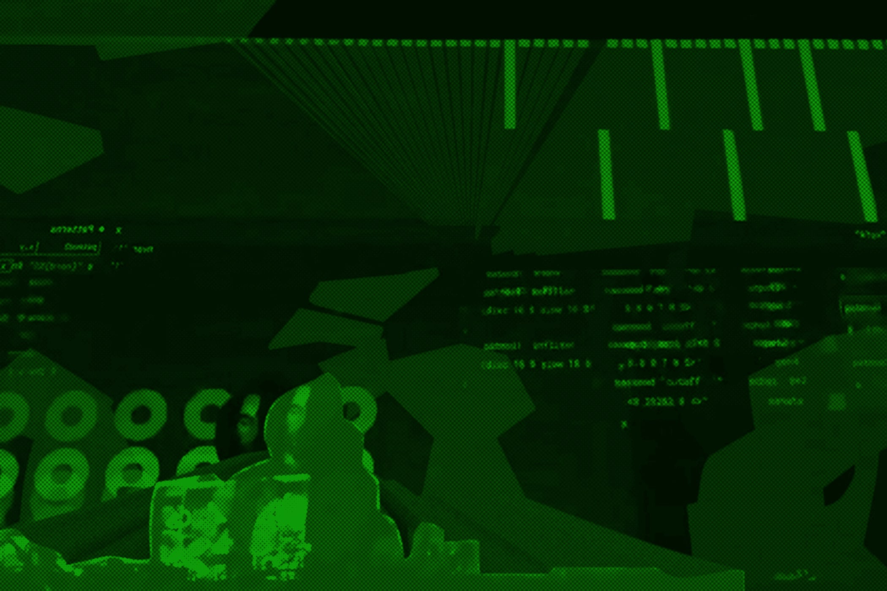

Vou
Vou is a digital instrument maker and programmer based in the UK. He utilises a live-coding tracker to generate rhythmic patterns with drawing sounds from electro and braindance. The soundscapes that seek hypnotic states, patterns generated by functions and some rhythmic some of the codified tracks, being split up and re-constructed live.